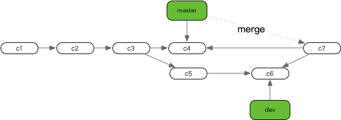

分支合并是将两个不同的分支所指向最后提交对象，合并成一个新的提交对象，在合并过程中git会依据这两个分支共同的父提交点，做为基础，将合并进来的分支中新添加的文件或者被修改的文件生成新的提交对象，该对象的父提交对象就是当前分支最后的提交对象
如图：将dev 分支合并到master中

c3 提交点是这两个分支共同基础，依据该基础点中未存在或者被修改过的文件，全部指向新的C7提交点，并且将C7的父提交点指向master的C4
合并冲突
冲突文件中会用 <<<<<<< , ======= , 和 >>>>>>> 来表示当前合并有冲突，”======= “ ：是文件冲突的分界线，上半部分至 “<<<<<<< HEAD“ 表示当前分支的内容 下半部分的内容是合并进来的内容。解决了所有文件里的冲突之后，对每个文件使用 git add 命令来将其标记为冲突已解决。一旦暂存这些原本有冲突的文件，Git 就会将它们标记为冲突已解决。
遇到冲突即使不解决，直接添加到暂存区git也认为是以解决
查看当前分支下合进来的分支
git branch --merged
* master
origin-master
master 表示当前分支 而origin-master表示已经合并进来的分支，可以删除
查看当前分支下未合进来的分支
git branch --no-merged
列表中的分支名称表示需要合并到当前分支上，如果将其删除会丢失数据，git是如何确定哪些是未合并进来的分支？